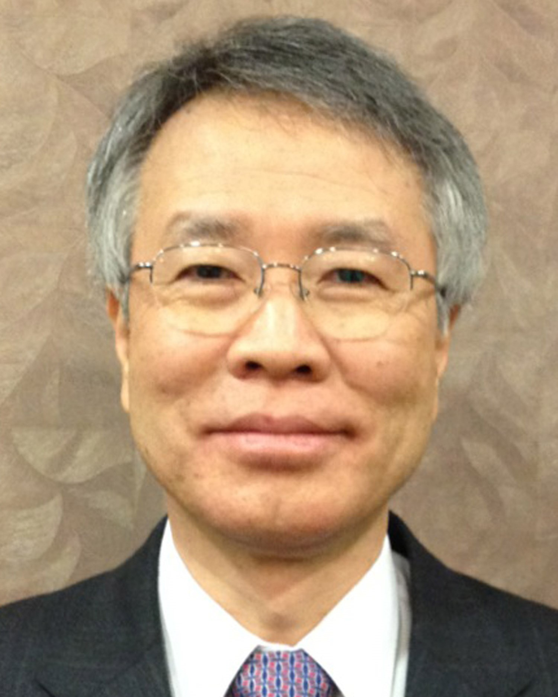

Brief Bio
Brief Bio
Professor Whang, Kyu-Young (KAIST Distinguished Professor) |
|  |
Computer Science Department
Korea Advanced Institute of Science and Technology 373-1 Koo-Sung Dong, Yoo-Sung Ku Daejeon 305-701, Korea Phone:
+82-42-869-3522
|
[ Honors || Professional Activities || Publications || Invited Talks || Research & Projects || Major Projects || Alumni ]
Brief Bio
Professional Experience| 2008 - present | KAIST Distinguished Professor |
| 1990 - present | Professor, Computer Science Department, KAIST |
| 1999 - 2008 | Director, Advanced Information Technology Research Center(AITrc) -- an Engineering Research Center(ERC) of Excellence supported by Korea Science and Engineering Foundation(KOSEF) |
| 1998 - 1999 | Director, Academic Information Management, Computing, and Science Library, KAIST |
| 1995 - 1997 | Chairman, Computer Science Department, KAIST |
| 1983 - 1990 | Research Staff Member, IBM T.J. Watson Research Center |
| 1975 - 1978 | Senior Engineer, Agency for Defense Development (ADD), Korea |
Research
Interests
Courses
Details
Honors Professional Activities (Selected) Full
List Publications
Journal or Conference Publications (Selected)
Invited Talks
Full List
Major
Projects Full
List Practicalizations Full
List
| Please send any suggestion or
comments for this page to webmaster@dblab.kaist.ac.kr
Last updated Nov. 30th, 2006 |
 |